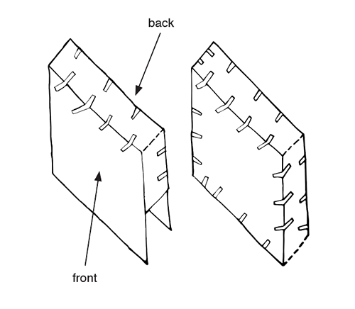
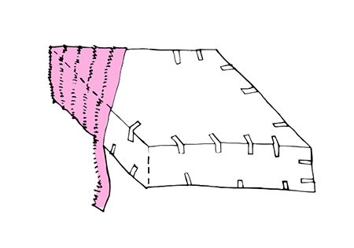
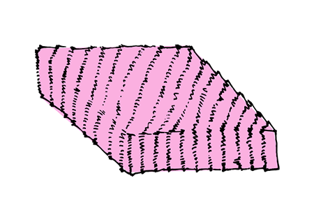
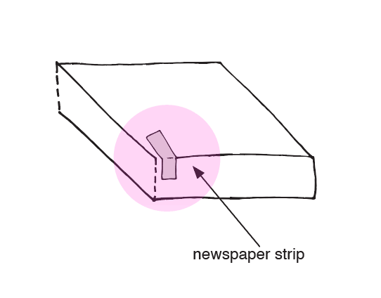
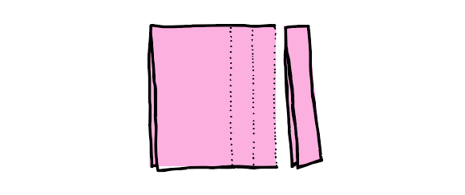
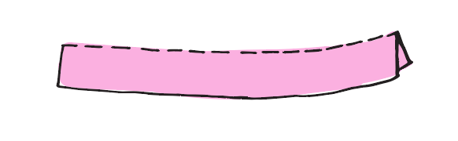
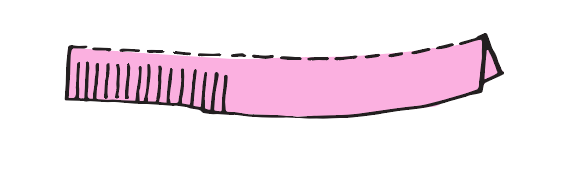
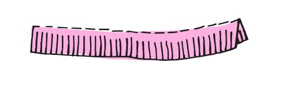
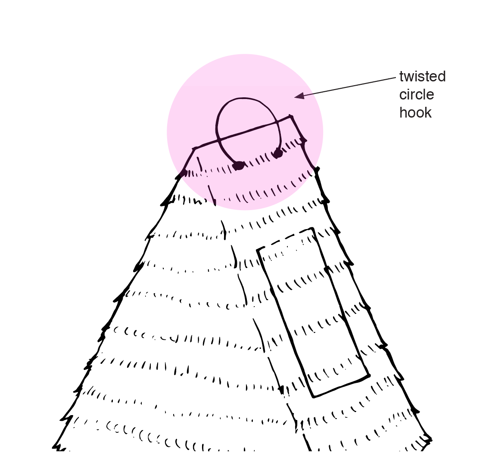

Cardboard
Ruler
Exacto Knife
Tape
Stack two pieces of cardboard together. Draw your pinata shape and then cut through the two layers of cardboard at the same time. These will be the front and back of the pinata body. *
Cut strips of cardboard for the edging (between 3-5" thick) you will need enough to go arond the entire pinata body.
Taking the strips, tape together the front and back of the pinata body. Reinforce it on the outside and on the inside as well.
Cut strips of cardboard for the edging (between 3-5" thick) you will need enough to go arond the entire pinata body.
Cover structure with papier mache (see how to papier mache) This will make the pinata much stronger but also heavier.
Cover the pinata body with solid crepe paper or paper fringe (see how to make decorative paper fringe).
Cut a candy flap and then repair with paper. (see how to make a candy flap)
Cut holes to hang pinata (see how to make a hanging hook)
* Be sure to put some layers below the cardboard so your cutting surface (table or floor) is not getting cut as well.
Drop Cloth
Bowl
Water
Flour
Whisk
Newspaper
Lay down a dropcloth or cheap plastic tablecloth first, and have a couple sheets of moist paper towels on hand.
Mix flour and water in a one-to-one ratio. If you plan to store your pinata you can add two tablespoons of salt to keep away bugs. *
Pour the water into a bowl with gently sloping sides then mix in the flour a little at a time using a whisk.
When the lumps are gone, the mixture should be the consistency of pancake batter.
Tear newspaper into 1.5 to 2 inch wide strips (narrower if your pinata has a lot of tight corners).
Dip one side of the newspaper strip into the papier mache then turn it over and wet the other side as well.
Wipe off the excess papier mache by pulling the strip between your first and second finger.
Lay the newspaper strip across the pinata base and smooth it down. Continue until the entire cardboard base is covered.
To make wet papier mache dry faster, set up a small fan blowing on it.
If you accidentally make the walls of the pinata too thick to break through, weaken the walls by stabbing or scoring them with a knife before decorating.
* There are many different recipies for paper mache (in french, papier mache) Some boil the flour and water mixture, some use white glue instead of flour,a nd some even use laundry starch. The simplest is to just mix flour and water and not heat it.
Crepe Paper
or
Tissue Paper*
Scissors
Cut paper into 2-3" wide strips.
Fold paper strips in half.
Cut evenly spaced fringe along the uncut edge of the paper strip. Leave some uncut area at the top.
Muss up the fringe, separate the layers and crunch it with your fingers for more texture.
* Crepe paper comes in both sheets and streamer. Tissue paper usually comes in packs that can be separated out into individual sheets. Any of these can be used to create decorative fringe for pinatas depending on the desired texture.
Exacto Knife
Paper
Glue
Candy*
Cut out three sides of a rectangle into the pinata somewhere near the top with a utility knife or even a serrated steak knife.
Fill the pinata with candy.
Close the candy flap, glue shut and then cover with whichever decorative cover you used on the pinata body so that the flap will dissapear.
It is usually easiest to add the candy flap after the decoration is complete.
* Any candy used to fill a pinata should be individually wrapped so that it is safe to eat after falling to the ground. If you wish to supplement or replace candy you can use small toys, craft supplies, play jewelry or glow sticks among many other fun pinata fillings.
The hook is one of the most important parts of the whole pinata-making process. The hook as to support the weight of the filled pinata and it must also be able to withstand a direct hit from the stick.
If your pinata is lightweight, punch two holes in the top of your pinata and run a piece of string through the holes
If your pinata is particularly heavy, use thick wire or a repurposed wire coat hanger twisted into a circular shape*
*Always twist your hanging hook into a closed loop. Never use an open hook (like an upside-down J), because pinatas swing and bounch as they are hit and it's easy for a J-hook to come off the rope.
-Find a safe place to hang the pinata with enough space to keep spectators out of range of the stick's swing.
-Watch the backswing.
-Have one person working the rope while another manages the waiting participants.
-Make sure your pinata hook is a securely closed loop, not a J-shape or open hook.
-Use a carabiner or spring hook to attache the rope to the pinata. This way you can have a secure knot tied and tested. When it's time to hang the pinata just slip on the carabiner and you're ready to go.
-Test your knot before hanging the pintata to make sure it will not slip.
-Use an appropriately sized stick for the pinata and participants*
Be prepared to weaken the pinata with a knife or scissors if it turns out the pinata is too thick to break.
Try to give as many people as possible a chance to whack the pinata before it breaks open.
*A baseball bat is often too damaging and a plastic broomstick might be completely ineffective. Consider who will be whacking the pinata and whether or not they will be blindfolded.
-Don't jerk the rope sharply or lower the pinata too abruptly on larger pinatas. Even a cardboard-reinforced hanging hook can tear through the paper mache if subjected to too much force. This is usually not a problem for ightweight pinatas, but can be a factor on heavier ones.
-Don't put breakable toys or candy in the pinata. Hard candies can shatter when hit by the stick or trampled by enthusiastic participants.
Supplies
Pinata Base
White decorative paper fringe
Gold cellophane streamers
Gold construction paper
1 Construct horse shaped pinata base.
2 Glue on white decorative fringe.
3 Cut and glue on mane and tail made from gold cellophane.
4 Cut out eyes and glue on.
5 Cut out horn shape and form into cone and attach with glue.
Supplies
Small paper lantern
Decorative fringe
Scissors
Glue
Twine
Freezer paper
Confetti*
1 Unfold paper lantern and insert wire form.
2 Cover lantern with decorative fringe.
3 Cut a circle of freezer paper into lantern, pushing down to cover the bottom opening.
4 Tape a piece of twine to the freezer paper.
5 Insert the circle twine side down, through the bottom of the lantern.
6 Fill with confetti.
7 Hang pinata and pull string to release confetti.
Supplies
Newspaper
Tissue Paper
Green Decorative fringe
Masking Tape
White or Green String
Glue
Toilet paper rolls
1 Scrunch newspaper into a ball and use masking tape to attach it to one end of the toilet paper roll. This forms the rounded top of the cactus. Scrunch another piece of newspaper to form each arm.
2 Cut a 3" square of tissue paper and draw an X in the center of it.
3 Use clear tape to attach a 6" piece of green string onto the X.
4 Fill the tube with candy or confetti. Use the glue stick to attach the tissue paper square to the sides of the toilet paper roll.
5 Tape a piece of white string to the top.
6 Cover pinata base in decorative fringe. Add flowers if desired.
7 Hang the pinata from the white string and use the green pull string to drop the fillings.
Supplies
Pinata Base**
Black and white decorative fringe
Black, white and pink decorative fringe
Googly eyes
1 Construct flat circular pinata base with two half circles for ears.
2 Decorate with white and black crepe paper fringe according to diagram below.
3 Cut construction paper for face and glue to front of pinata.
4 Add googly eyes
* This pinata could be made as different animals (including a tiger, bear, cat or dog) by changing the color of the decorative fringe and the shape of the eyes and nose.
** Follow instructions for how to make a cardboard pinata base
This website was designed and coded by Max Makes aka Max DeVore.
All the text and illustrations are orginally from this book about pinatas also by Max Makes
{kind=link}
{kind=link}